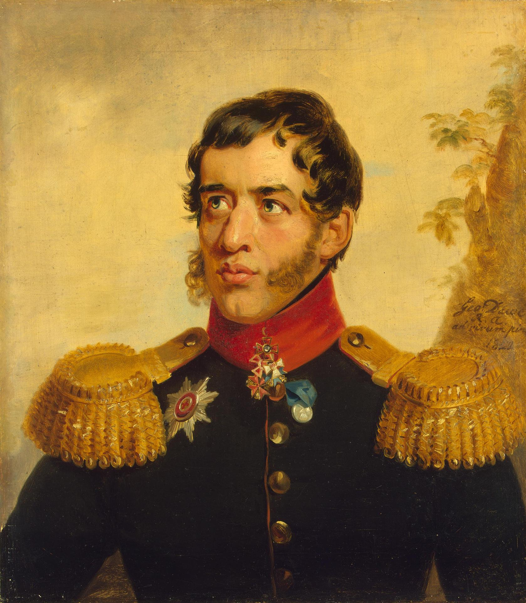
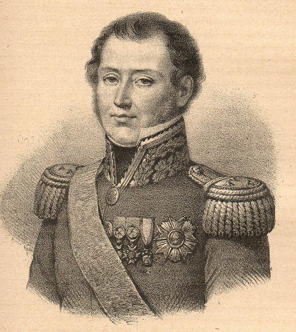
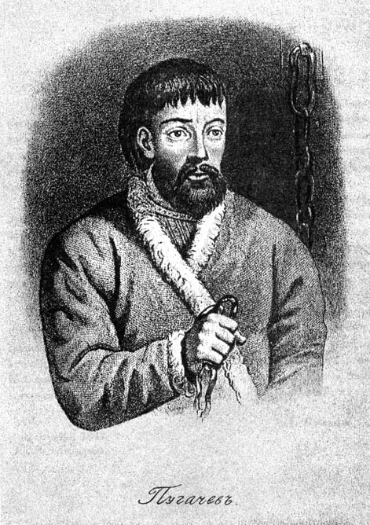
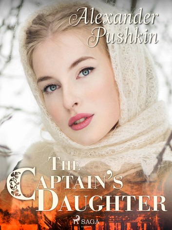

애국과 반란 사이에서 - 1812년 러시아 농노들과 프랑스군
게시: 2021-02-08T06:30:40+09:00
전두환의 군사독재가 한창이던 시절, 혹시 일본군이 쳐들어 온다면 여러분은 독재정권을 타도할 절호의 찬스라고 생각하고 일본군에게 협력하시겠습니까, 아니면 누가 뭐래도 외적을 몰아내는 것이 먼저라고 생각하고 전두환의 지시에 따라 일본군과 싸우시겠습니까? 다소 황당한 설정입니다만, 1812년 나폴레옹의 침공을 받은 러시아의 농노들이 딱 그런 상황이었습니다. 쿠투조프의 후퇴 소식을 접한 알렉산드르가 이런 패배를 접한 러시아 귀족들의 동태에 대해 묻자 '제가 그 일원이라는 것이 부끄러울 정도입니다' 라고 솔직하게 대답할 정도로 강직했던 젊은 귀족 볼콘스키(Sergei Volkonsky) 대공은 알렉산드르가 농민들에 대해 묻자 이렇게 대답했습니다. "폐하 ! 그들에 대해서는 자랑스러워 하셔도 됩니다. 모든 농노들이 조국과 폐하께 충성하는 영웅이라고 할 수 있습니다."

(세르게이 볼콘스키입니다. 그는 알렉산드르의 사후인 1825년 데카브리스트 반란에 가담했고 반란이 실패로 끝나자 사형이 언도되었다가 결국 시베리아 유배형으로 감형됩니다. 그의 아내도 자발적으로 남편을 따라 유배지로 갔는데, 이르쿠츠크(Irkutsk)의 광산에서 무려 30년간을 복역한 그는 결국 68세의 나이에 사면되어 유럽 여행을 한 뒤 딸의 소유지인 작은 마을에서 여생을 보냈습니다.) 그러나 그 말이 꼭 사실인 것은 아니었습니다. 많은 농노들이 프랑스군을 피해 움직일 수 있는 가축과 옮길 수 있는 식량을 싣고 숲 속으로 도망쳤고 그것이 바로 러시아군이 원하는 바였습니다만, 그게 꼭 조국과 짜르에 대한 충성심 때문은 아니었습니다. 대부분의 농노들은 그냥 전쟁이 싫었고 전쟁을 피해 도망쳤을 뿐이었습니다. 농노들이 프랑스군으로부터 도망친 또 하나의 이유는 러시아군이 일부러 퍼뜨린 헛소문 때문이었습니다. 러시아군은 농노들에게 '침공하는 프랑스놈들은 이교도들'이라고 소문을 냈는데 덕분에 프랑스인들을 러시아 농노들은 '비수르만'(Bisurman)이라고 불렀습니다. 이건 전통적으로 남쪽 국경의 이슬람 교도들을 부르는 명칭이었으므로 농노들은 프랑스인들을 막연히 두려워하고 혐오했습니다. 그러나 농노들도 바보가 아니었고 눈과 귀가 있었습니다. 막상 프랑스군과 맞닥뜨린 이들은 프랑스군도 결국 예수 그리스도를 섬기는 기독교인이라는 것을 알자, 그들에 대한 선입견을 버리고 우호적으로 대하기 시작했습니다. 가령 포니아토프스키 휘하의 기마 포병대의 야코프스키(Michal Jackowski)라는 장교는 딱 1명의 부하와 함께 어떤 마을에 진입했다가 쇠스랑과 도끼 등으로 무장한 마을 농노들 50여명에게 포위당하는 봉변을 당했습니다. 그러나 야코프스키가 기독교식 폴란드 인사를 하자 이를 알아본 러시아 농노들은 곧 무기를 치우며 '댁이 기독교인이라면 우리는 댁과 딱히 원한이 없소이다'라는 말을 했습니다. 야코프스키는 이후 언제나 마을에 들어서자마자 이렇게 기독교식 인사를 했고, 이를 보고 몰려나온 러시아 농도들에게 '여분의 식량이 있다면 돈을 내고 사겠다'라고 말함으로써 별 말썽없이 식량을 구할 수 있었습니다. 이렇게 러시아 농노들과 우호적인 관계를 맺는데는 러시아와 비슷한 문화적 배경을 가진 폴란드 출신을 내세우는 것이 효과적이었으므로 곧 많은 프랑스 사단에서는 폴란드인들을 한두명씩 내세워 러시아인들과 협상하는데 활용했습니다. 덕분에 모스크바 주변 농장에서 식량 조달을 위해 분견대가 출동할 때, 스페인 농민들과는 달리 러시아 농노들은 별다른 저항을 하지 않았습니다. 베르테젠(Pierre Berthezène) 장군의 주장에 따르면 고위 장교들의 하인들이 가끔 시골로 먹을 것을 사러 나갈 때는 호위대도 없이 혼자 나가는 경우가 많았으며, 러시아 농노들은 오히려 그런 프랑스인들에게 코삭 기병대나 러시아군의 매복에 대해 미리 경고를 주기도 했고, 어떤 경우엔 도망친 귀족 지주가 어디에 식량을 감췄는지 프랑스군에게 알려주고 함께 파내어 사이좋게 나눠가졌다고 합니다. 또한 베르톨리니(Bartolomeo Bertolini)라는 이탈리아 출신 장교는 러시아군에게 포로로 잡혔다가 탈출했는데, 자신을 불쌍히 여긴 러시아 농노들이 먹을 것을 주고 길을 알려준 덕분에 무사히 모스크바까지 도망칠 수 있었습니다.

(베르테젠(Pierre Berthezène) 장군입니다. 나폴레옹보다 6살 어렸던 그는 나폴레옹의 백일천하 때 다시 나폴레옹 휘하로 달려가 워털루 전투에도 참전했습니다만 그 덕분에 다시 벨기에로 추방되었습니다. 나중에 복권되어 알제리 원정에도 참전했었고, 루이 필립 왕 때 작위도 받았습니다.)
러시아 농노들에 대해 걱정했던 것은 오히려 러시아 귀족들이었습니다. 로스톱친은 모스크바 함락 이전에 프랑스군의 접근을 걱정하며, 작가였던 글린카(Sergei Glinka)에게 러시아 민중이 어느 쪽에 붙을지 알 수 없다고 우려했는데, 이게 모든 러시아 귀족층의 솔직한 심정이었습니다. 러시아 귀족들도 자신들이 신으로부터 권리를 부여받은 당연한 지배자라서 농노들이 자신들에게 머리를 조아리는 것 이외에는 전혀 상상을 못하는 비양심적인 사람들은 아니었습니다. 치체린(Aleksandr Chicherin)이라는 중위는 쿠투조프의 지휘 하에 후퇴하면서 지금처럼 자유에 대한 생각이 농촌에 퍼지고 귀족들이 이기적이고 품위없이 한심한 모습을 보여준다면 결국 대규모 소요 사태와 무질서가 벌어질 것이라는 걱정을 일기에 적었습니다. 마라쿠에프(M.I. Marakuev)라는 상인도 경찰과 관리들의 영향력이 눈에 띄게 약해졌고 농노들의 분위기가 점점 소란스러워진다고 걱정했습니다. 이들의 걱정은 단순한 기우가 아니었습니다. 프랑스군이 저 먼 지역에라도 나타났다는 소식이 들리면 농노들이 주인의 지시를 무시하고 해야 할 노동을 거부하는 일이 늘어났습니다. 프랑스군을 피해 주인이 피난을 떠나는 경우 농노들은 기다렸다는 듯이 주인이 비우고 간 장원의 저택을 약탈했습니다. 주인이 도망치지 않고 남더라도 프랑스군의 징발대가 들러 필요한 식량과 귀중품을 몰수해가면, 프랑스군이 떠나자마자 농노들이 우르르 달려들어 남은 귀중품과 식량을 모조리 약탈했습니다. 귀족 농장주 뿐만 아니라 러시아 정교의 사제들도 농노들의 분노의 대상이 되어, 일부 사제들은 농노들에게 붙잡혀 고문을 당하며 감춰둔 교회의 보물을 내놓으라고 추궁을 당하기도 했습니다. 급기야 많은 지역에서 농노들은 프랑스군이 주인의 장원 저택을 약탈하는 것을 앞장 서서 도왔습니다. 일이 이렇게 되다 보니 오히려 러시아 귀족 농장주들이 프랑스군에게 사람을 보내어 농노들의 습격으로부터 자신을 보호해달라는 요청을 하는 지경에 이르렀습니다. 이때의 희한한 상황을 적나라하게 보여주는 실화가 있습니다. 프랑스군이 점령한 스몰렌스크 인근에 엥겔하르트(Pavel Ivanovich Engelhardt)라는 지주가 살았습니다. 애국심이 강했던 그는 농노들을 데리고 먹을 것을 구하러 시골 구석까지 진출하는 소규모 프랑스군 징발대를 습격했습니다. 이 공격이 성공하자 엥겔하르트는 기분이 뿌듯해졌지만 곧 자기가 실수를 했다는 것을 깨달았습니다. 자신들이 군인들을 죽일 수도 있다는 사실을 깨달은 농노들이 주인인 엥겔하르트의 지시를 무시하고 일을 거부하기 시작한 것입니다. 그러자 화가 난 엥겔하르트는 인근에서 활동하던 러시아 코삭 부대를 불러와 노동을 거부한 농노들을 처벌하고 질서를 세웠습니다. 그런데 코삭들이 물러나자마자 농노들이 몰래 사람을 스몰렌스크로 보내 프랑스군에게 엥겔하르트를 고발했습니다. 프랑스군은 일단 엥겔하르트를 체포하여 구금했는데, 조사를 해보니 딱히 이 지주가 프랑스군을 습격했다는 물적 증거를 찾지 못하자 그냥 풀어주었습니다. 엥겔하르트는 이 밀고에 그야말로 화가 나서 다시 코삭 기병들을 불러와 또 농노들을 처벌했습니다. 그러자 프랑스군이 증거를 중시한다는 것을 깨달은 농노들은 지난번 습격에서 죽였던 프랑스군 시체 두어구를 엥겔하르트의 장원 저택 주변에 묻어놓고는 다시 프랑스군을 불러와 또 고발했습니다. 이번에는 시체라는 증거가 나오자 프랑스군은 엥겔하르트를 즉결처분으로 총살했고, 농노들은 만세를 불렀습니다.

(푸가쵸프입니다. 그는 돈 강 유역 코삭 출신이었는데, 자유인인 코삭들이 자유의 대가로 러시아 왕정에게 약속한 대로 그도 러시아군에 기병으로 징집되어 7년 전쟁을 비롯한 여러 전쟁에 참전했습니다. 병으로 휴가를 냈던 그는 제대를 신청했다가 받아들여지지 않자 복귀를 거부하고 도망쳐 결국 반란을 일으켰습니다. 결국 33세의 나이로 체포되어 처형되었지만 그가 남긴 반란의 충격은 꽤 컸습니다.)

(푸쉬킨의 소설 '대위의 딸'(Kapitanskaya dochka)은 바로 이 푸가쵸프의 난을 배경으로 한 소설입니다. 제가 중학생일 때, 그러니까 군사독재정권일 때는 학교에서 필독도서로 권장하는 책이었는데 대체 왜 그랬는지 모르겠습니다. 아마 결국 민중 반란 일으키면 비참한 죽음 뿐이다, 오로지 자비로우신 여왕폐하께 충성해야 한다 뭐 그런 것 때문 아닌가 싶습니다.) 많은 귀족들이 전면적인 농노들의 봉기를 걱정했습니다. 에카테리나 여제 시절 간신히 진압했던 민중 반란인 푸가쵸프(Yemelyan Pugachev)의 난 이야기가 다시 사람들 입에 오르내렸고, 귀족들은 농노들의 눈치를 보기 시작했습니다. 전쟁 발발 전에는 거만하고 고압적인 태도로 작업 지시를 하던 것이 당연했는데, 이제 농노들에게 일을 시키려면 간곡히 부탁하는 태도로 이야기를 해야 했습니다. 그러나 여전히 귀족들은 개혁의 필요성보다는 건방지고 냄새나는 농노들의 소요를 진압해야 할 문제로만 보았습니다. 마리아 볼코바(Maria Antonovna Volkova)라는 귀족 여성은 모스크바 대화재 소식을 듣고 친구에게 편지를 쓰며 다음과 같이 썼습니다. "나폴레옹이 무슨 불순한 의도를 가지고 러시아를 침공했는지 우리 모두 알쟎아? 그런 의도에 대응을 해서 그 악당으로부터 민심을 돌리고 농노들을 진정시키도록 해야 해. 농노들은 언제나 생각이 없으니까 말이야." 이렇게 러시아는 자기 내부의 문제 때문에 스스로 붕괴될 지경에 처한 상태였습니다. 그러나 나폴레옹을 위해 차려진 이 모든 밥상을 걷어찬 사람이 있었으니 그는 바로 나폴레옹 본인이었습니다.
Source : 1812 Napoleon's Fatal March on Moscow by Adam Zamoyski
en.wikipedia.org/wiki/Sergey_Volkonsky
en.wikipedia.org/wiki/Yemelyan_Pugachev
www.kobo.com/gr/en/ebook/the-captain-s-daughter-21